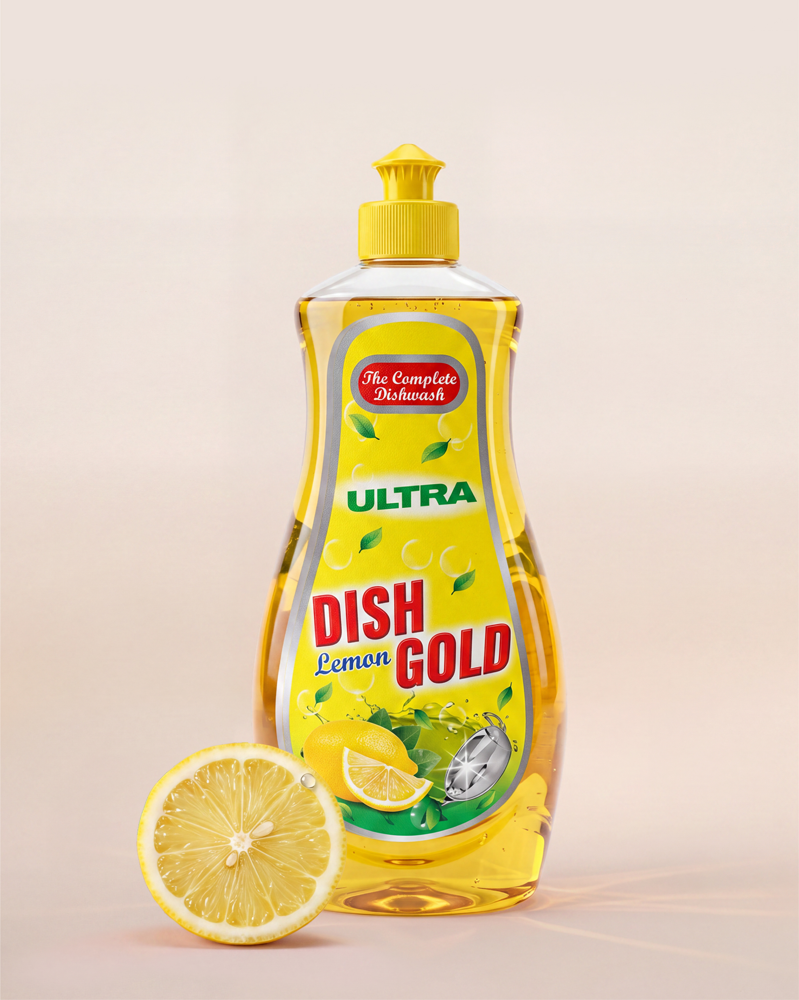

Tamarind & Jaggery
Natural Tamarind
Swarnam Natural Tamarind brings the naturally tangy character of tamarind to everyday cooking. A traditional kitchen essential, tamarind plays an important role in creating depth and balance in a variety of familiar recipes. Its distinctive sourness can complement curries, chutneys and other traditional preparations, adding a characteristic flavour that is instantly recognisable. Swarnam Natural Tamarind makes this much-loved ingredient a convenient part of everyday cooking, allowing it to be incorporated into recipes that call for the authentic tang of tamarind. From simple home cooking to traditional dishes passed down through generations, it adds a familiar culinary character that helps bring traditional flavours to life.
Explore product →